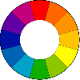
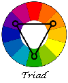
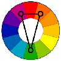

Adding Color to Your Logo:
Every color evokes a different emotion.
Reds can be associated with anger, strength and power, but can also be used for passion, desire and love. Blues are associated with depth and stability, and they also symbolize trust and loyalty.
It's important to contemplate what colors you are going to use in your logo because of the different meanings that they have. There have been many studies done on colors and the different effects they have on people. Some studies even show colors that people like more for certain objects, like green for money.
If you want to use more than one color for your logo, I would suggest using a color wheel. This will help with really great color harmonies, such as a complementary color scheme - two colors that are opposite of each other on the wheel - and an analogous color scheme - colors that are next to each other on the wheel.
There are a lot of things that you can do with color, and a color wheel can help you pick out appealing colors. Other types of harmonies include a triadic color scheme - three colors even spaces on the color wheel - and a split-complementary color scheme - a variation of the complementary color scheme where, in addition to the base color, it uses the two colors adjacent to its complement.
When picking colors, keep in mind that you might be giving the wrong impression with your choices. Red may mean "awesome" to you but could mean "angry" to someone else.